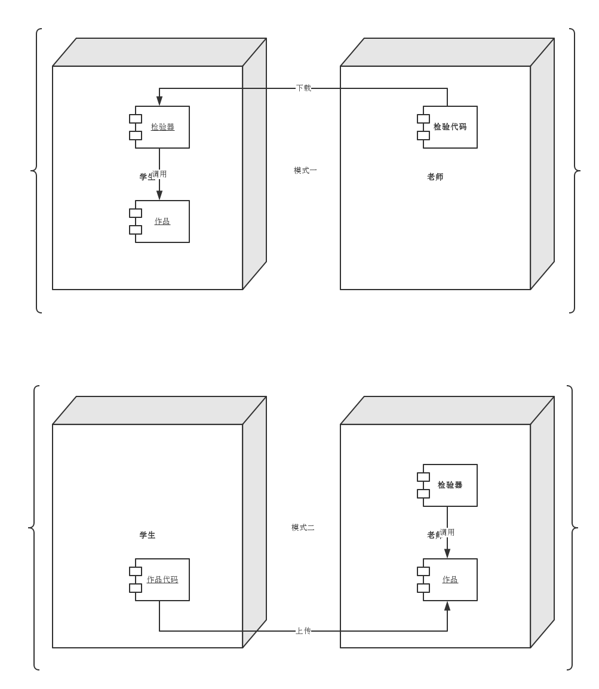
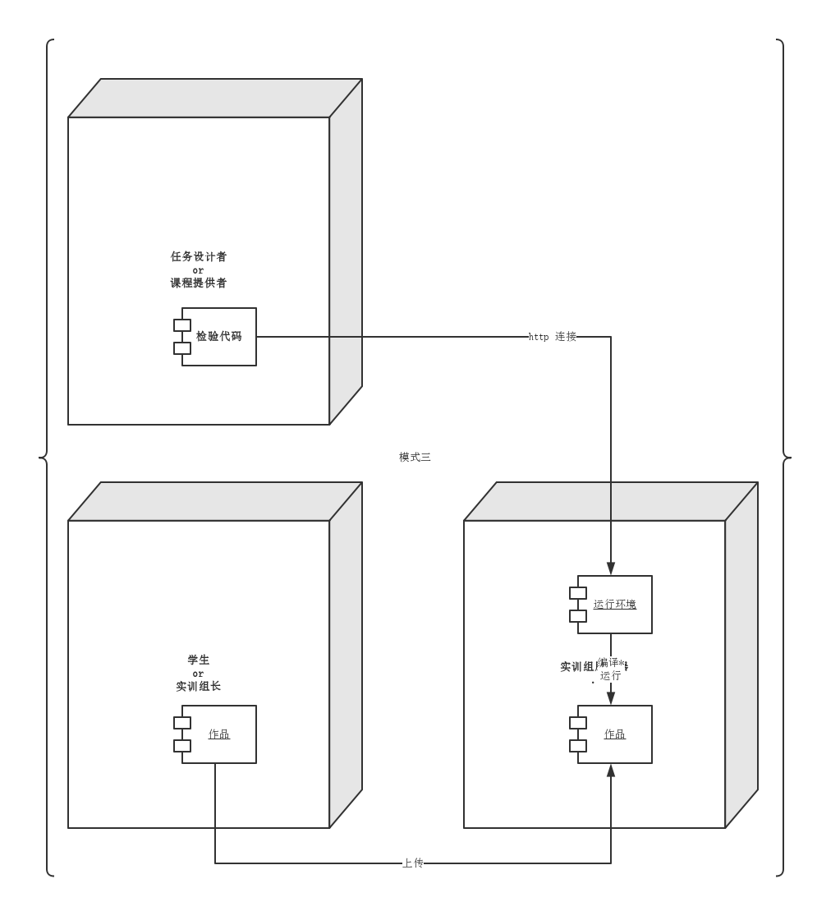

class: center, middle # 实训平台定制 ### 在线实践|自动测试|实时报告 --- class: center, middle, inverse #测试框架 --- .left-column[ ### 测试框架 #### ITW框架 ] .right-column[ </img> ] --- .left-column[ ### 测试框架 #### ITW框架 #### 模式一 ] .right-column[ ###ITW ```xml * <script src="http://192.168.3.4/static/js/1.js"></script> <script type="text/javascript"> * test(); <!-- 练习开始 --> function add(a,b){ return a+b; } <!-- 练习结束 --> </script> ``` ###learnyounode ```javascript npm install learnyounode * learnyounode verify program.js ``` ] ??? 1. learnyounode模式没有配套的协作和分配规则，靠开源社区的义务工作，作者积极性不高。 2. 安全性较高，在学员计算机上运行。 3. 适用于简单的、状态无关的、单机的任务。 --- .left-column[ ### 测试框架 #### ITW框架 #### 模式一 #### 模式二 ] .right-column[ ###ITW 学生提交代码的页面： ```xml <form action="http://192.168.3.4/submit" method="post"> ...... </form> ``` 代码接收服务器，golang部分： ```javascript b, _ := clearsign.Decode([]byte(r.FormValue("studentcode"))) ... t.Execute(w, template.JS(b.Plaintext)) ``` 代码接受服务器，测试页面模版html部分： ```xml <script type="text/javascript"> ...... * {{.}} </script> ``` ] ??? 1. 安全性：服务器执行外来代码 2. 适用于状态有关的、单机的任务 --- .left-column[ ### 测试框架 #### ITW框架 #### 模式一 #### 模式二 #### 模式特点 ] .right-column[ ##@ Javascript * 易学 * 免安装 * 跨平台 * 前端+后端 ##@ browser * script 标签可读入测试代码 * form 标签 post方法可提交文本（被测试代码） ##workshop * 重点在于训练数学思维 * 针对非IT专业、中小学生 ] ??? ###script定义和用法 - script 标签用于定义客户端脚本，比如 JavaScript。 - script 元素既可以包含脚本语句，也可以通过 src 属性指向外部脚本文件。 - 必需的 type 属性规定脚本的 MIME 类型。 - script 标签支持 HTML 中的全局属性。 ###form - form 标签用于为用户输入创建 HTML 表单。 - 表单能够包含 input 元素，比如文本字段、复选框、单选框、提交按钮等等。 - 表单还可以包含 menus、textarea、fieldset、legend 和 label 元素。 - 表单用于向服务器传输数据。 - form 标签支持 HTML 中的全局属性。 --- .left-column[ ### 测试框架 #### ITW框架 #### 模式一 #### 模式二 #### 模式特点 #### 扩展 ] .right-column[ IT专业高校学生的实训需要： ##js以外的教学语言 * 需要安装配置 * 编译 vs. 解释 ##更复杂的业务逻辑 * 更复杂的接口 * 状态相关的调用时序 ##更前沿的教学内容 * 更高成本的任务设计和课程制作 * 专业的一线工程师 ] --- .left-column[ ### 测试框架 #### ITW框架 #### 模式一 #### 模式二 #### 模式特点 #### 扩展 #### 新模式 ] .right-column[ </img> ] ??? ##运行环境 1. 通用型：能够完成代码编译（可选）、运行，并为学员作品提供存储、事件驱动等机制。 2. 任务专用：每个任务分别扩展基础代码，增加该任务专用的本地功能。 ##检测代码 1. 按照业务逻辑调用学员作品，分析返回值给出报告。 2. 使用http连接（GET\PUT\POST\DELETE等）定义任务。 ##安全性 1. 学员、任务设计者、课程提供者的计算机不暴露在公网。 2. 任务设计者、课程提供者的计算机不执行未知代码。 3. 实训组服务器没有关键数据，可以重新部署。 --- class: center, middle, inverse #编译语言 --- .left-column[ ### 编译语言 #### 实训组编译 ] .right-column[ ##学员提交源代码 * email、qq、U盘... * ftp、git[-->实训课程]... * 专门开发的工具[-->实训课程] ##实训组组长编译 * 人工编译 * 自动编译 * travis-ci:持续集成[-->实训课程] * 专门开发的工具[-->实训课程] ] --- .left-column[ ### 编译语言 #### 实训组编译 #### 学员编译 ] .right-column[ ##学员编译源代码 * 交叉编译 * 开发环境 vs. 运营环境 ##实训组组长接收执行文件 * 安全：病毒、恶意代码 * 抄袭问题 ] --- .left-column[ ### 编译语言 #### 实训组编译 #### 学员编译 #### 部署 ] .right-column[ ##人工部署 * 初始化数据 * 资源分配（端口、本地IO） ##自动部署 * docker | dockerfile [-->实训课程] ] --- .left-column[ ### 编译语言 #### 实训组编译 #### 学员编译 #### 部署 #### 对比 ] .right-column[ ##安全性 1. 实训组编译 > 学员编译 2. 自动部署 > 人工部署 ##实训组成本 1. 实训组编译 > 学员编译 2. 人工部署 > 自动部署 建议选择实训组编译，以人工部署开始，逐渐过渡到自动部署。 ] --- class: center, middle, inverse #解释语言 --- .left-column[ ### 解释语言 #### ] .right-column[ ] --- class: center, middle, inverse #测试结果 --- .left-column[ ### 测试结果 #### 状态无关任务 ] .right-column[ 任务设计者只提供分数，以下测试结果是可选的内容： ##返回错误 * 输入：输出 * http response对象 ##其它错误 * 超时 | 无返回 * 停止响应 * 非法数据 ] --- .left-column[ ### 测试结果 #### 状态无关任务 #### 状态有关任务 ] .right-column[ ##状态跃迁路径 * S0 -> input[i0,i1,...] * output[o0,o1,...] & S[S1,S2,...] * 期望路径 vs. 实测路径 ##数据环境 * 期望 vs. 实测 * 运行环境需要有监视功能 ] --- .left-column[ ### 测试结果 #### 状态无关任务 #### 状态有关任务 #### 改进建议 ] .right-column[ ##由实训组组长提供 1. 明确的职责 2. 通常在课堂以外自行组织 3. 实训主任可以提供[收费的]协助 ##由讲师、助教提供 1. 通常不属于面授内容 2. 只针对实训组组长 3. 通常在课堂中穿插安排，有余力的学员选听 也可以由其它学员提供。 ] ??? 工业界：自己调试解决。 --- class: center, middle, inverse #项目计划 --- class: center, middle, inverse #联合运营